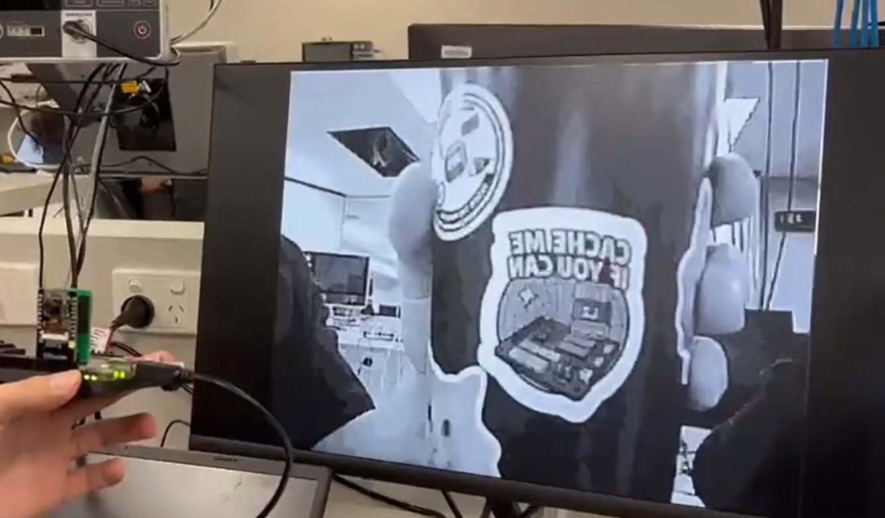

FPGA-Based Multi-Processor Camera System
I built most of the Milestone 1 camera-to-VGA foundation, then developed the four-processor architecture and shared-memory coordination for the final RGB system.

The system
In Milestone 1, we developed a grayscale ESP-CAM-to-VGA display pipeline. Milestone 2 extended it into an RGB camera system with normal, flipped, blurred, Sobel edge-detected and four-grid output modes. The final system used four Nios II processors on a DE10-Lite FPGA board.
My contribution
Milestone 1 - System foundation
- Developed most of the original grayscale camera-to-VGA system, including camera input, frame handling and display integration.
Milestone 2 - System architecture
- Designed and implemented task allocation across four Nios II processors.
- Integrated camera capture, processing and VGA display using shared SDRAM buffers and processor hand-off flags.
- Implemented mutex-based protection for shared data and buffer state updates.
Team contribution & outcome
My teammates focused on the image-processing effects, including flip, blur, Sobel edge detection and the four-grid mode. I focused on the system foundation, multiprocessing architecture and integration of these modes into the camera-to-display pipeline.
The team demonstrated the RGB image-processing system and compared frame rates across different designs. The benchmarks also revealed trade-offs: splitting demanding image-processing tasks helped in some modes, while extra synchronisation and RGB processing introduced overhead in others.
How the four-processor pipeline works
The final project report names the four Nios II cores CPU0, CPU1, CPU2 and CPU3. CPU0 captures the camera data, CPU1 and CPU3 handle image processing, and CPU2 sends completed frames to VGA.
🔒 Shared SDRAM frame buffers · ready/busy flags · mutex-protected state updates
Demonstration
This video shows the live camera and display setup with multiple image output modes.
Project demonstration · 24 seconds.